Source
SourceNote
Click here to download the full example code or to run this example in your browser via Binder
General-purpose images¶
The title of each image indicates the name of the function.
- 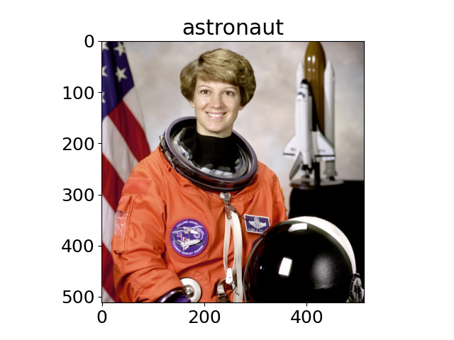
- 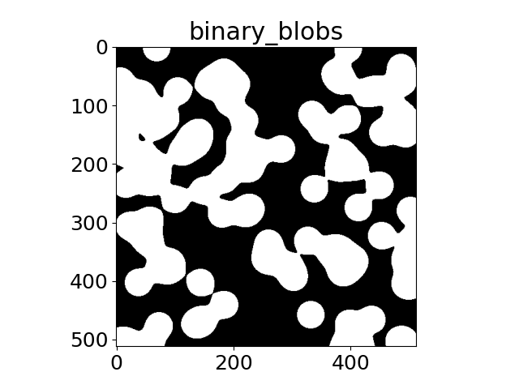
- 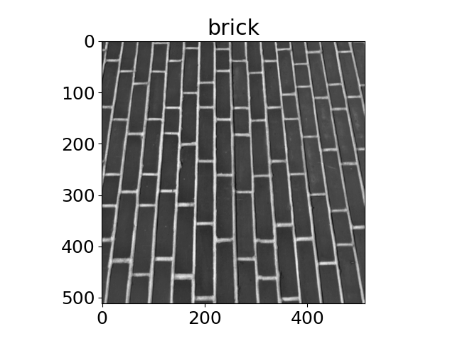
- 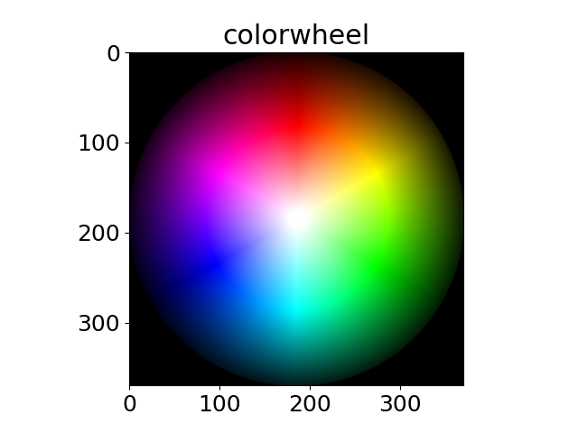
- 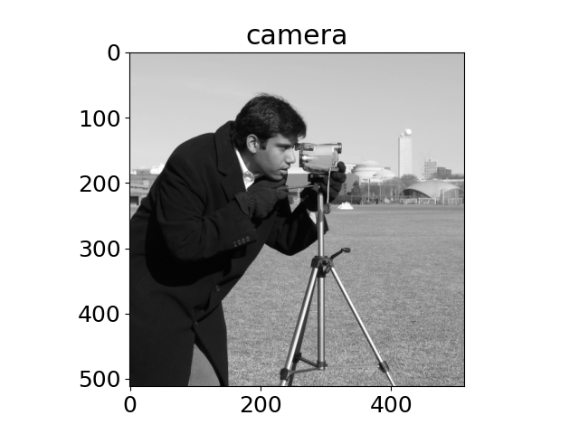
- 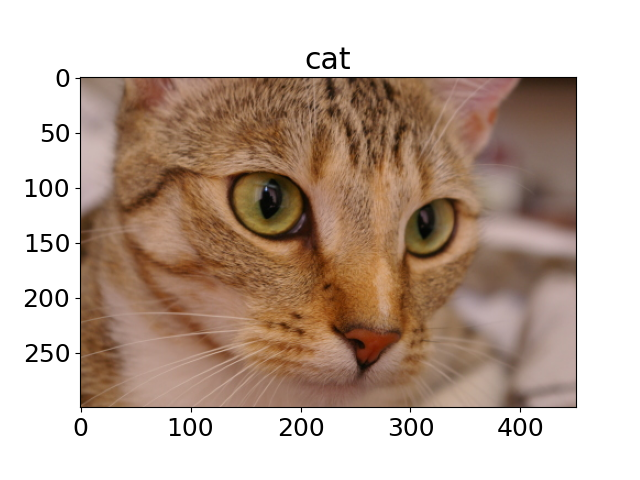
- 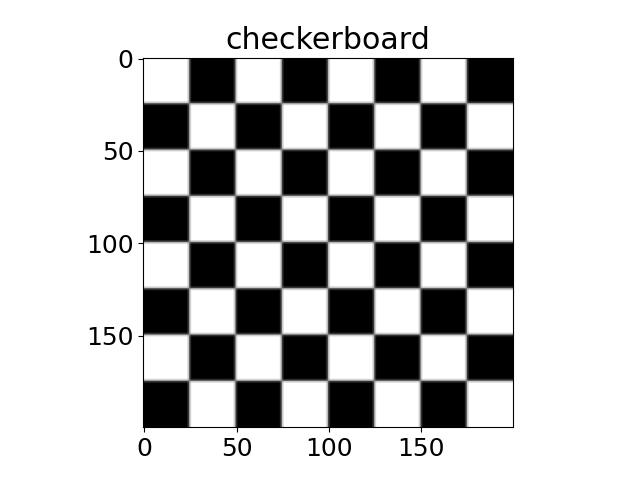
- 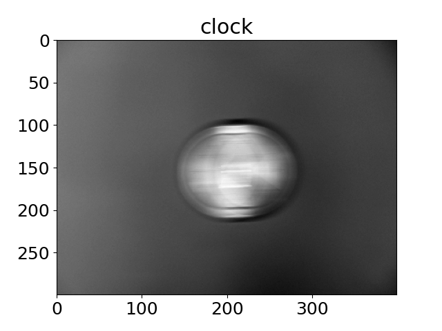
- 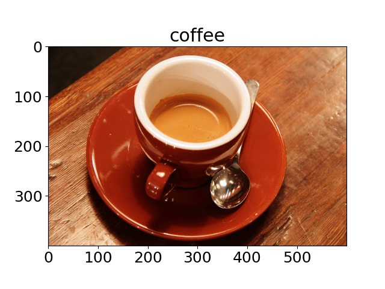
- 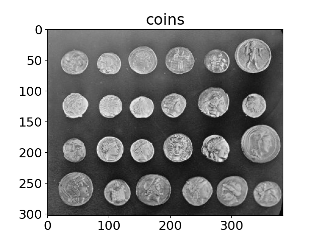
- 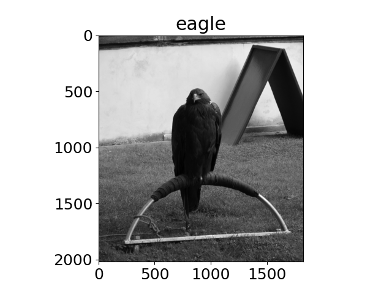
- 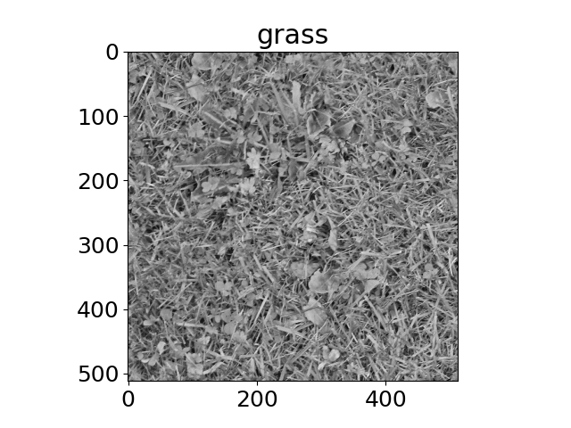
- 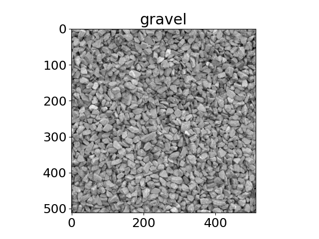
- 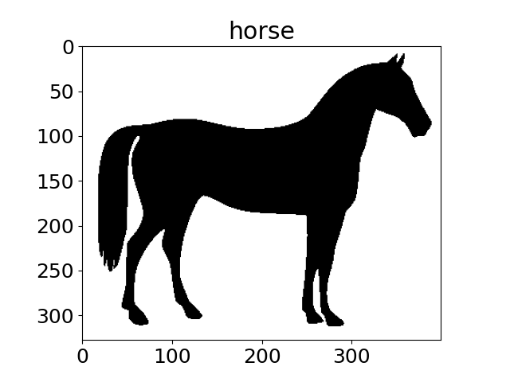
- 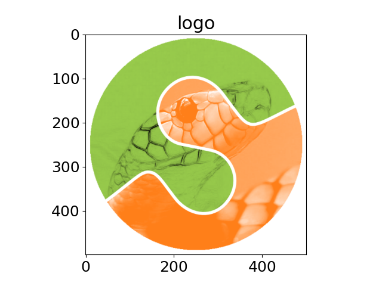
- 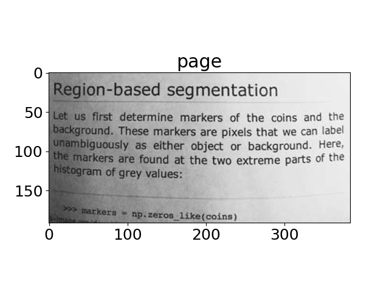

- 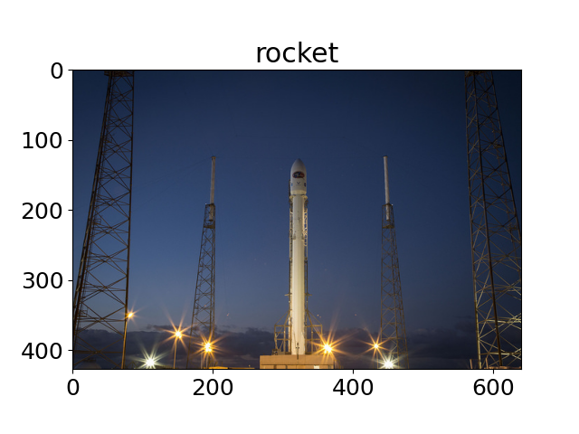
import matplotlib.pyplot as plt
import matplotlib
from skimage import data
matplotlib.rcParams['font.size'] = 18
images = ('astronaut',
'binary_blobs',
'brick',
'colorwheel',
'camera',
'cat',
'checkerboard',
'clock',
'coffee',
'coins',
'eagle',
'grass',
'gravel',
'horse',
'logo',
'page',
'text',
'rocket',
)
for name in images:
caller = getattr(data, name)
image = caller()
plt.figure()
plt.title(name)
if image.ndim == 2:
plt.imshow(image, cmap=plt.cm.gray)
else:
plt.imshow(image)
plt.show()
Total running time of the script: ( 0 minutes 3.365 seconds)